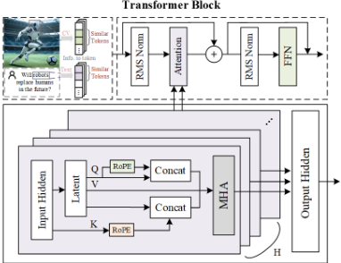
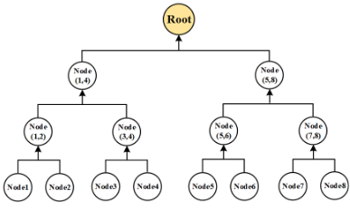
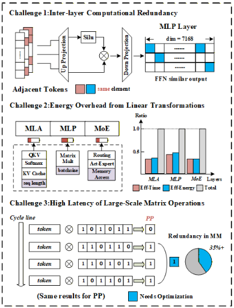
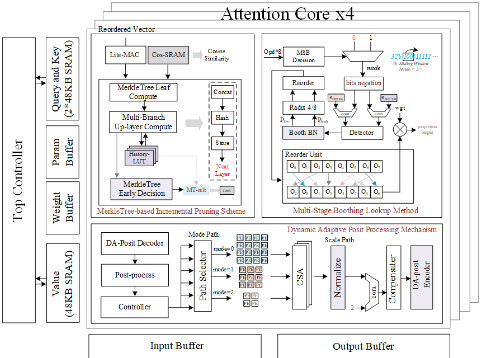
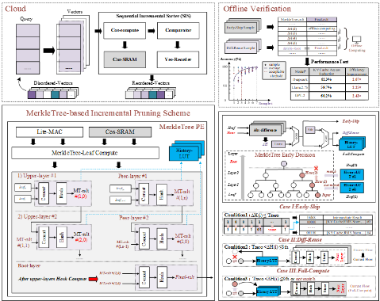
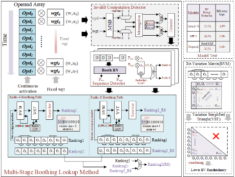
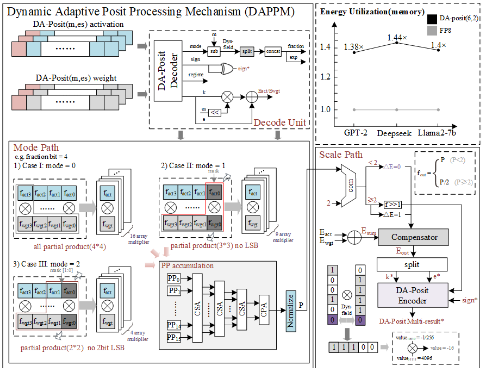
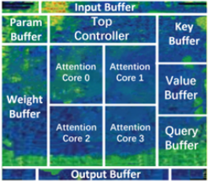

DSPE: An Energy-Efficient Edge Processor for Deepseek Inference with Merkletree-Based Incremental Pruning, Multi-Stage Boothting Lookup and Dynamic Adaptive Postsl Processing
DSPE：采用基于 MerkleTree 的增量剪枝、多级 Booth 查找与动态自适应 Posit 处理的面向 DeepSeek 推理高能效边缘处理器
简介
DeepSeek-V3 这类大模型推理难以部署在能耗受限的边缘设备上，瓶颈包括层间计算冗余、线性变换带来的信号翻转与内存功耗、以及大规模矩阵运算的高延迟。论文提出边缘推理处理器 DSPE，引入三项技术：MIPS 用 MerkleTree 哈希对相似向量做增量剪枝与结果复用，MBLM 用 Bayesian Network 冗余评分自适应切换 radix-4/radix-8 Booth 编码并查表复用，DAPPM 提出零额外位开销的 DA-Posit 动态精度格式及配套乘法硬件。设计以 Verilog 实现，经 Synopsys Design Compiler 综合与 IC Compiler 在 TSMC 28nm 完成布局布线，面积 8.23mm²，最高频率 710MHz。峰值能效 109.4 TFLOPS/W@POSIT8，结论中称比 GPU-H100@FP8 高 19.35 倍。该工作属 AI 加速器架构范畴，与团队存储/互连 IP 主业无直接交集，仅访存量削减数据可作背景了解。
问题
DeepSeek-V3 推理在能耗受限边缘设备上部署困难，论文归纳三类挑战：(1) 层间计算冗余——相邻 token 的 Q/K 向量高度相似、KV cache 上下文重叠、同一专家重复计算，产生大量时空冗余中间表示；(2) 线性变换能耗开销——密集 MLP、稀疏 MoE 与 MLA 的 KV cache 维护访问造成显著信号翻转与内存功耗；(3) 大规模矩阵运算高延迟——同一权重乘多组激活时 Booth 编码差异导致大量 bit 翻转，推高能耗。
方法
提出 DSPE 边缘推理处理器，顶层含 4 个 Attention Core（每个含 64 个 PE），配 iRouter/oRouter、Input/Output Buffer、24KB Parameter Buffer、48KB Weight Buffer、两个 48KB Query/Key 专用 SRAM 与一个 48KB Value 专用 SRAM，由 Top Controller 集中调度数据流与访存。三项核心技术：(1) MIPS：软件级 Sequential Incremental Sorter 按余弦相似度增量排序并缓存于 Cos-SRAM；MerkleTree PE 用局部敏感哈希自底向上建树，按层间哈希差 ΔH 与阈值 T_zero/S_th 做出 Early-Skip（直接复用 KV Cache 索引与中间结果）、Diff-Reuse（查 History-LUT 复用）、Full-Compute（继续建树并写回 LUT）三类决策；(2) MBLM：以近零权重/激活阈值剔除无效乘法，用 Bayesian Network 基于位相似度 BS 与重复片段长度输出冗余评分，评分低于 0.8 走 radix-4、高于 0.8 走 radix-8 Booth 扩展路径；用 8×8 Bit-Variation Matrix 去重简化为 VST，并配 Booth-LUT 按 BV 翻转模式查表跳过完全冗余计算；(3) DAPPM：提出 DA-Posit 格式，把 exponent/fraction 当作可重构 Dyn-field，利用 regime 边界码扩展为 scale+mode 联合映射，在不增加编码位宽下区分无压缩/1-bit/2-bit 压缩三模式，硬件按模式选择 16/9/4 个 Array Multiplier PE，经 CSA Tree 与 CPA 完成累加与归一化。
关键结果
MIPS 在 MMLU 数据集上为 DeepSeek-V3 节省 33.5% DRAM 访问与 36.2% SRAM 访问
MBLM 在 MMLU 数据集上使计算量减少 39.1%
DAPPM 在保持相同计算精度的前提下将计算速度提升 1.47 倍
TSMC 28nm 实现：总面积 8.23mm²，含 4 个 PE 阵列（每个 64 个 PE）；供电 0.6V-1.10V，功耗 122mW-345mW，1.10V 下最高频率 710MHz，最高性能 22.8 TFLOPS@POSIT8
0.6V、200MHz 下峰值能效 109.4 TFLOPS/W@POSIT8，结论中称比 GPU-H100@FP8 高 19.35 倍
创新点
区别于依赖静态稀疏或统一操作数假设的已有方案，DSPE 强调根据输入数据特征、层类型与分布式负载实时自适应调整计算：以 MerkleTree 哈希的 Early-Skip/Diff-Reuse/Full-Compute 三态增量决策替代静态剪枝；以 BN 冗余评分驱动的操作数重排、radix-4/radix-8 自适应 Booth 编码与 Booth-LUT 查表复用降低 bit 翻转能耗（论文称优于静态 weight-only 剪枝）；并提出零额外位开销、可借助 regime 尺度信息无损恢复的 DA-Posit 动态精度格式及其乘法硬件架构。
团队参考意义
相关度级别：low
命中能力域：无明显对应
理由：论文贡献集中在边缘 AI 加速器的微架构创新（MerkleTree 哈希剪枝、Booth 乘法查找、Posit 数值系统与乘法阵列），既不涉及 LPDDR/HBM/DDR/UCIe 等存储或互连协议与 IP 设计，也未触及团队验证方法学（全文无 UVM、formal、emulation、覆盖率等内容）；其 Verilog 实现、Design Compiler 综合与 IC Compiler 布局布线属标准流程描述，不构成 2.2/2.3 域的方法学输入。唯一间接关联是 MIPS 报告的 33.5% DRAM 与 36.2% SRAM 访问削减，可作为理解 AI 负载访存行为的背景数据，但不涉及存储 IP 本身设计，故判定为 low、无明显对应域。
建议动作：暂不相关
中文全文
arXiv:2605.08615v1 [cs.AR] 9 May 2026
DSPE: An Energy-Efficient Edge Processor for DeepSeek Inference with MerkleTree-based Incremental Pruning, Multi-Stage Boothing Lookup and Dynamic Adaptive Posit Processing
Yuhan Zhang †
东北大学计算机科学与工程学院 中国沈阳
Yanqing Xu 香港中文大学（深圳）
中国深圳
Yang Liu
南洋理工大学
新加坡，新加坡 Imperial Global Singapore 新加坡，新加坡
Zhou Wang ∗†
伦敦帝国理工学院 英国伦敦 Imperial Global Singapore 新加坡，新加坡
Xiaonan Tang Wisemaytech Co., Ltd. 中国北京 Zhou Shu Jiuren Zhou 西安电子科技大学微电子学院 中国西安 西安电子科技大学杭州研究院 中国杭州 Shushan Qiao Tianchun Ye 中国科学院微电子研究所 中国北京 中国科学院大学 中国北京
Anil A. Bharath
Emm Mic Drakakis 伦敦帝国理工学院 英国伦敦 Imperial Global Singapore 新加坡，新加坡
Keywords
DeepSeek、高能效、边缘计算、冗余消除。
ACMReference Format:
Yuhan Zhang、Zhou Wang、Zhou Shu、Jiuren Zhou、Yanqing Xu、Xiaonan Tang、Shushan Qiao、Tianchun Ye、Yang Liu、Anil A. Bharath与Emm Mic Drakakis。2026。DSPE：一种面向DeepSeek推理的高能效边缘处理器，采用基于Merkle树的增量剪枝、多级Booth查找与动态自适应Posit处理。收录于第63届ACM/IEEE设计自动化会议（DAC '26），2026年7月26日至29日，美国加利福尼亚州长滩。ACM，美国纽约州纽约市，7页。https://doi.org/10.1145/3770743.3805813
1 Introduction
BERT、GPT 等大语言模型（LLMs）的兴起推动了自然语言理解、生成与推理领域的重大进展 [3, 11, 17, 18]。Transformer 的自注意力机制使长序列建模更加高效，但随着模型规模扩展至数千亿参数，由此产生的巨大计算开销与海量存储需求日益凸显。在此背景下，DeepSeek-V3 凭借其出色的推理效率与泛化能力受到了广泛关注。如图1所示，DeepSeek-V3 的推理流水线
Abstract
近年来，DeepSeek 已展现出强大的推理性能，但仍难以部署于能耗受限的边缘设备。本文提出 DeepSeek 处理单元（DeepSeek Processing Element，DSPE），这是一种面向边缘的体系结构，可缓解该模型沉重的计算与能耗需求。DSPE 引入了三项技术：用于安全冗余向量削减的基于 MerkleTree 的增量剪枝方案（MIPS）、面向位翻转感知近似乘法的多级 Booth 乘法查找方法（MBLM），以及动态自适应 Posit 处理机制（DAPPM），后者引入了一种新的 DA-Posit 格式及其相应的硬件乘法架构。DSPE 采用 TSMC 28nm CMOS 工艺实现，与最先进设计相比实现了 109.4 TFLOPS/W 的能效，并为边缘部署提供了可扩展的基础。
∗ 通讯作者。
† 这些作者对本文贡献相同。

本工作基于知识共享署名 4.0 国际许可协议（Creative Commons Attribution 4.0 International License）授权。DAC '26，美国加利福尼亚州长滩
© 2026 版权归所有者/作者所有。
ACM ISBN 979-8-4007-2254-7/2026/07
由多个堆叠的 Transformer 层组成：每一层首先将输入词元映射为查询（Q）、键（K）和值（V）向量 [4, 7, 13, 16]，随后在注意力子层与多层感知机（MLP）子层中协同处理。为进一步增强表示能力，注意力组件采用多头结构并行捕获来自不同语义子空间的特征；在 MLP 子层中，门控激活与专家选择机制使不同词元能够按需被路由至最合适的专家模块进行非线性变换 [8, 9, 15]。同时，DeepSeek-V3 在推理过程中维护 KV 缓存（KV Cache），从而在长序列场景下复用历史信息，有效减少冗余计算 [6, 12, 14]。

在大规模语言模型的发展过程中，随着参数冗余问题日益突出，学术界与工业界提出了多种优化方向以提升推理效率 [10]。一方面，算法层面的方法包括模型蒸馏、低秩矩阵分解、稀疏化以及混合专家（MoE），它们通过减少参数数量或降低计算复杂度来提升推理性能 [1]。另一方面，在硬件层面，GPU、TPU 等加速器采用脉动阵列与混合精度技术，在保持模型规模的同时提升吞吐量。这些方法在通用 LLM 的部署中取得了一定成功，但仍难以有效解决参数之间的计算冗余问题 [2, 5, 20, 21]。同时，对于 DeepSeek-V3 这类具有超大规模参数与分布式 MoE 特性的模型，仍然缺乏专门的体系结构支持 [19]。
为克服上述局限性，本文提出了一种专为 DeepSeek 分布式推理设计的高效处理器架构，称为 DeepSeek 处理引擎（DSPE）。与依赖静态稀疏性或统一操作数假设的传统方案不同，DSPE 能够根据输入数据特征、层类型和分布式工作负载，实时自适应地调整计算过程。本文的主要贡献总结如下：
(1) MerkleTree-based Incremental Pruning Scheme
我们提出了基于 Merkle 树的增量剪枝方案（MIPS），该方案在缓解边缘推理中计算冗余的同时，通过一个三阶段
(2)
流水线：“相似性重排序-Merkle 树编码-动态复用”。该模块利用序列增量排序器（sequence incremental sorter）维持语义连续性，并通过 Merkle 树编码实现安全高效的计算跳过与数据复用。结合针对对应相似特征的结果复用机制，MIRA 在降低带宽开销的同时提升了推理能效。
2.1 DeepSeek-V3
DeepSeek-V3 是一种针对长序列和自回归推理进行优化的大规模 Transformer，基于多头潜在注意力（MLA）与稀疏专家混合（MoE）构建。输入词元经过嵌入处理，与位置编码结合后，被送入堆叠的 Transformer 模块。对于单头注意力，其计算可表示为：
而 MLA 可表示为：
在 MLA 中，Query 关注缓存的 Key/Value 对，从而在长序列和自回归场景下实现对历史上下文的高效复用。前馈阶段可实现为稠密的多层感知机（MLP）或稀疏的 MoE 层，后者的计算形式为：
其中，𝐺 𝑖 ( 𝑥 ) 是一个稀疏门控函数，仅对少数专家分配非零权重。
2.2 Posit
Posit 格式是一种紧凑的、动态编码的浮点表示方法，由位宽（𝑛）和指数大小（𝑒𝑠）定义，可提供优于浮点数的精度范围。其具体格式由以下四个部分组成：
1) 符号位（Sign）：0 表示正数，1 表示负数。2) Regime：标度因子采用游程编码（run-length encoding）方法表示，由若干个连续相同的位（0 或 1）组成，当出现相反的位或到达位串末尾时结束。3) 指数（Exponent）：Posit 可以直接反映数值变化的幅度。4) 尾数（Fraction）：如果指数位之后仍有剩余的位，则这些位表示尾数。
2.3 Merkle Tree

Merkle 树是一种基于哈希的层次化结构，它通过递归地将叶子哈希组合成一个唯一的根来高效地检查完整性，从而可以通过根的一致性来验证数据的完整性与安全性。它的另一个重要价值在于：当计算结果被唯一确定时，其各中间节点的计算值也随之被唯一确定，这可用于对数据进行提前预测。
2.4 Challenges of DeepSeek-Base Processor
如图3所示，在边缘设备上部署 DeepSeek 所面临的挑战与其分层推理过程的特性相关，主要可分为三类：
(1) Inter-layer Computational Redundancy :
DeepSeek 在其分阶段处理过程中会产生大量时空冗余的中间表示。这些中间表示对最终结果的影响甚微（例如，相邻词元的相似变换、重叠的键值缓存上下文，以及同一专家的重复计算）。在边缘设备上，这表现为资源浪费，但同时也为实现高效优化提供了契机。
(2) Energy Overhead from Linear Transformations :
在 DeepSeek 中，其分层处理过程中大量重复的大规模线性变换、注意力计算和路由决策（尤其是稠密的多层感知机（MLP）、稀疏的混合专家（MoE），以及多头潜在注意力（MLA）中键值（KV）缓存的维护与访问）会引起显著的信号翻转和存储器功耗，在能量受限的边缘平台上很容易达到甚至超过功耗限制。

(3) High Latency of Large-Scale Matrix Operations :
在推理场景中，矩阵乘法正逐渐采用 Booth 乘法方案以减少部分积并加速计算。然而，当同一权重与多组激活值相乘且它们的 Booth 编码存在显著差异时，会引起大量的位翻转，并显著增加能耗。
3 PROPOSED DSPE PROCESSOR


DeepSeek 处理单元（DeepSeek Processing Element, DSPE）处理器的整体架构包含 4 个注意力核心（Attention Core, AC），如图 4 所示，其采用三项核心技术：基于 Merkle 树的增量剪枝方案（Merkle-Based Incremental Pruning Scheme）、多级 Booth 查找方法（Multi-stage Boothing Lookup Method）以及动态自适应 Posit 处理机制（Dynamic Adaptive Posit Processing Mechanism）。每个 AC 的数据通路中包含一个 iRouter 和一个 oRouter。iRouter 将激活值和权重动态分发到目标处理单元（Processing Element, PE）。此外，该架构还包含一个输入缓存（Input Buffer）和一个输出缓存（Output Buffer），分别用于缓存输入数据和计算结果。一个 24KB 的参数缓存（Parameter Buffer）和一个 48KB 的权重缓存（Weight Buffer）用于预存中间参数和可复用的权重数据。顶层控制器（Top Controller）集中调度数据流和存储器访问：一方面，它控制两个 48KB 的 Query/Key 专用静态随机存取存储器（SRAM），并管理一个 48KB 的 Value 专用 SRAM；另一方面，参数缓存可以根据顶层控制器的调度策略加载不同层的参数块，从而实现流水线化的权重复用；而权重缓存则与 iRouter 协同工作，确保权重张量在不同注意力核心之间高效地广播与共享。
3.1 MerkleTree-based Incremental Pruning Scheme (MIPS)
在 DeepSeek 的 token 级解码阶段，每个新查询都需要对不断增长的 KV 缓存进行注意力计算，而相邻 token 会产生高度相似的 Q/K 向量，从而导致冗余的相似度评估和 KV 访问。为了利用这种冗余性，我们设计了一种基于 MerkleTree 的增量剪枝方案（MerkleTree-based Incremental Pruning Scheme, MIPS），如图5所示，该方案采用由相似度重排序、MerkleTree 提前决策和动态复用构成的三级流水线。
首先，MIPS 模块在软件层面引入了一个 Sequential Incremental Sorter：新生成的向量根据其与当前序列中已有向量的余弦相似度，按增量顺序插入到合适的位置，同时所有余弦相似度得分均缓存在 Cos-SRAM 中。其次，重排序后的向量被送入 MerkleTree PE。
高维向量通过轻量级 MAC 运算被投影到一个紧凑的语义空间，得到 𝑉 low = MAC ( 𝑉 reordered ) 。然后，对于每个新输入向量，MerkleTree PE 通过复用 Cos-SRAM 中的余弦相似度，利用局部敏感哈希计算叶节点，自底向上逐步构建 Merkle 树。在每一层（例如第 𝑖 层），当前中间节点的哈希值被记录为 𝐻 cur ( 𝑖 ) ，并与同一专家所处理的历史输入中同层中间节点的哈希值 𝐻 ref , 𝑗 ( 𝑖 ) 进行比较。差值计算为：Δ 𝐻 𝑗 ( 𝑖 ) = | 𝐻 cur ( 𝑖 ) - 𝐻 ref , 𝑗 ( 𝑖 )| 。分别设置两个阈值 𝑇 zero 和 𝑆 th，用于判定是否存在冗余计算或近似计算。
基于MerkleTree的增量剪枝方案（MIPS）能够在第 𝑖 层做出三类决策：1）Early-Skip：若 Δ 𝐻 𝑗 ( 𝑖 ) ≤ 𝑇 zero，则认为当前输入在哈希空间中与该层的历史样本完全相同，或仅在比特级 0/1 上存在差异。MIPS 直接复用相应的 KV Cache 索引和中间结果，将当前轮次视为重复计算并予以跳过。2）Diff-Reuse：若 𝑇 zero < Δ 𝐻 𝑗 ( 𝑖 ) ≤ 𝑆 th，且 Δ 𝐻 𝑗 ( 𝑖 ) 在 History-LUT 𝑖 中命中，则表明该层的差分模式此前已完成过一次 Full-Compute 并登记了可复用的结果。此时，MIPS 直接查找结果索引，终止更高层级的 Merkle 构建及后续计算，并将当前流水线切换至复用路径。3）Full-Compute：若 Δ 𝐻 𝑗 ( 𝑙 ) > 𝑆 th，或者即使其落在近似范围内但在整个 History-LUT 中均未找到匹配表项，则当前输入被视为“全新模式”。MIPS 将继续构建更高层级的节点直至根哈希。完成后，Δ 𝐻 及其最终结果会被写回 History-LUT，以供未来复用和统计之用。为评估早期判断的鲁棒性，MIPS 在硬件侧为上层系统预留了必要的统计接口。系统软件可以在离线后台模式下对样本重新计算完整的根哈希，以统计评估各类早期决策与根节点判断之间的一致性。
MMLU 数据集常被用于综合评估大语言模型的跨领域知识理解与推理能力。本文在 MMLU 数据集上对 DeepSeek-V3 进行了评估。通过 MMLU 评估，我们发现 MIPS 通过在 MerkleTree 的中间节点执行查找复用与 Early Decision，节省了 33.5% 的动态随机存取存储器（DRAM）访存量和 36.2% 的 SRAM 访存量。
3.2 Multi-Stage Boothing Lookup Method (MBLM)
在 DeepSeek 的推理阶段，多层感知机（MLP）层中的矩阵乘法运算表现出明显的时间局部性：来自相邻时间帧并依次进入计算单元的激活值与一组固定的权重相乘，形成了“多个乘数 × 同一被乘数”的计算模式。然而，传统的矩阵乘法阵列缺乏对时间邻近性所带来的复用机会的感知。为此，本文提出了多级 Booth 查找方法（Multi-Stage Boothing Lookup Method, MBLM），如图6所示，引入了一个无效计算检测器、一个用于冗余分类的贝叶斯网络（Bayesian Network, BN）

模型以及一个分支式 Booth 查找流水线，该方法用于区分由时空局部性引起的向量冗余。
首先，MBLM 每次将 8 个乘法操作数送入无效计算检测器。若权重或激活值非常小，则其贡献可以忽略。基于这一观察，该模块设置了近零权重与激活阈值 𝑅 zero_wgt 和 𝑅 zero_act。满足 | 𝑤 | < 𝑅 zero_wgt 或 | 𝑎 | < 𝑅 zero_act 的乘法对被直接标记为无效计算并予以跳过。在此基础上，MBLM 在序列检测单元内部引入了一个 Booth BN 模型，以对操作数之间的相似性进行建模和分类：通过提取相邻 token 乘法请求的位相似度（bit similarity, BS）和重复片段长度（Repeat Length, Re-length），获得输入序列的冗余特征表示。BS 如公式4所示，BV 指相邻乘法请求之间的位翻转次数。
BN 输出两个概率 𝑃 ( 𝑅 = Low ) 和 𝑃 ( 𝑅 = High )，并基于二者计算冗余分数，如公式5所示：
当冗余分数低于 0.8 时，MBLM 选择 radix-4 Booth 作为常规路径；当分数高于 0.8 时，则切换至 radix-8 Booth 扩展路径，在更高进制编码下进一步减少部分积的数量。该模块对任意两个被乘数之间的 BV 进行统计累加，构建 8×8 位变化矩阵（Bit-Variation Matrix, BVM），并消除两类冗余：Case I 是诸如 “A 与 B” 和 “B 与 A” 这类交换对的重复计数；Case II 是诸如 “A 与 A” 这类无效计数。由此，有效统计区域可简化为变化简化三角（Variation Simplified Triangle, VST）。常规路径输出的排序结果记为 ranking2，扩展路径输出的结果记为 ranking2_R8。
MBLM 进一步引入了一种轻量级的重复检测与查找复用机制。每个 VST 都配备了一个小型 Booth-LUT，用于记录该表项上一次执行时的 BV 翻转模式及相应的顺序索引。当新的乘法对映射到某个特定 VST 表项时，重复检测单元首先将其 BV 翻转分布与表项进行比较；若 BV 计数为零或低于预设的“完全匹配”阈值，则认为该计算在当前精度下是完全冗余的，从而跳过 Booth 编码与部分积生成。最终由一个比较器对结果进行比较，并据此选择执行顺序。
基于 MBLM 的分析表明，在 MMLU 数据集上对 DeepSeek-V3 的计算量可减少 39.1%，这意味着计算速度可以进一步提升。MBLM 中 Booth 编码后重排序列里显著减少的位翻转实现了冗余削减。
3.3 Dynamic Adaptive Posit Processing Mechanism (DAPPM)
在 Deepseek 边缘推理场景中，多精度共存与精度转换往往造成显著的硬件开销。Posit 数值系统凭借其灵活性和宽表示范围被用于替代浮点数。然而，典型的面向推理的 Posit 通常采用指数位宽与尾数位宽相同或相近的格式。在实际运行中，指数与尾数的边界并非总能被充分利用，致使某些位长期处于冗余状态，几乎不携带信息。
为此，本文为 DSPE 提出了一种名为动态自适应 Posit（Dynamic Adaptive Posit，DA-Posit）的统一表示格式。DA-Posit 利用对有效指数范围进行编码的 regime，并将指数与尾数视为可重构的“动态精度域”（Dyn-field）。当低位比特高度相关或冗余时，便施加结构化合并压缩：例如，对于 8 位 Posit，当指数与尾数的最后 2 位或 1 位相同时，将其折叠为共享位。即使在超低精度配置下，也可通过末位折叠额外节省 1 位。这些操作仅作用于低位比特，而低位比特对数值的影响极小，因此可利用 regime 提供的标度信息无损地恢复原始 Posit 语义。同时，DA-Posit 复用极少数边界 regime 编码，将其扩展为“标度 + 模式”联合映射，以区分“无压缩 / 1 位压缩 / 2 位压缩”三种模式，且不增加任何编码位宽，从而实现零额外位开销的自适应 Posit 表示。
针对 DA-Posit 数据，本文提出了一种动态自适应 Posit 处理机制（DAPPM），如图 7 所示。首先，使用 DA-Posit 译码器将输入译码为符号位、regime、( 𝑘, 𝑒 ) 和 Dyn-field，并利用式 (6) 将 ( 𝑘, 𝑒 ) 合成为复合指数 𝐸：
随后进入模式路径：根据模式值（0/1/2）选择 16、9 或 4 个 Array Multiplier PE 的计算配置。所得部分积在 PP Accumulation Unit 中经过多级 CSA Tree 与 CPA 运算，得到 Posit 乘法结果并完成规格化。接着，数据进入标度路径。首先，检查规格化结果是否落在预设范围 ( 0 , 2 ) 内。若不在，则执行补偿与修正。若在，则使用 DA-Posit 编码对乘法结果进行编码，然后恢复为 DA-Posit 格式。
| GPU H100[1] | ISSCC'23 [6] | ISSCC'23 [7] | VLSI'24[8] | This Work | |
|---|---|---|---|---|---|
| Training Support | YES | NO | NO | YES | YES |
| Technique (nm) | 4 | 12 | 28 | 22 | 28 |
| Die Area (mm 2 ) | 814 | 4.6 | 14.36 | 6.4 | 8.23 |
| Supply Voltage (V) | NA | 0.62 - 1.0 | 0.6 - 1.0 | 0.6 - 1.0 | 0.6 - 1.1 |
| Frequency (MHz) | 1620 | 77 - 717 | 85 - 275 | 115 - 495 | 200 - 710 |
| Precision | FP64/32/8 INT32/8/4 | FP8/4 | INT16/8 | BF16/FP8 | POSIT8, INT8/4 |
| Power (mW) | 700000 | 10 -122@FP89 - 111 @FP4 | 29.83 - 152.75 | 49.2 - 451.2 | 122 - 345 |
| Performance (TOPS or TFLOPS) | 1978.9 @FP163957.8 @FP8 | 0.367 @FP8 0.734 @FP4 | 0.89 @INT163.55 @INT8 | 2.38 @BF16 5.69 @FP8 | 22.8 TFLOPS @POSIT8 |
| Energy Efficiency (TOPS/W or TFLOPS/W) | 2.827 @FP16 5.654 @FP8 | 8.24 @FP8 18.1 @FP4 | 60.3 @INT16101.1 @INT8 | 20.58@BF1654.94 @FP8 | 109.4 TFLOPS/W@POSIT8 |
| | GPU H100[1] | ISSCC'23 [6] | ISSCC'23 [7] | VLSI'24[8] | This Work |

对于 MMLU 数据集上的 DeepSeek-V3，DAPPM 方法借助 DA-Posit 的三种位压缩机制与灵活的 Array Multiplier PE 模式选择，在保持相同计算精度的同时，将计算速度提升 1.47 倍。
4 EVALUATION RESULTS
基于所提出的 DSPE 方法，我们使用 Verilog 实现了一个 DeepSeek 推理处理器。为了实现准确的评估，我们借助 Synopsys Design Compiler 工具对该处理器进行了综合，并采用 28nm CMOS 工艺通过 IC Compiler 完成布局布线。图8 展示了所实现处理器的版图。它包含 4 个 PE 阵列（即 Attention Core），每个 PE 阵列包含 64 个 PE 核。总面积消耗为 8.23 mm²。所提出处理器的供电电压范围为 0.6V 至 1.10V，功耗范围为 122mW 至 345mW。该处理器在 1.10V 电压下工作时达到最高频率 710MHz，并以 22.8TFLOPS@POSIT8 实现最高性能。在 0.6V 电压和 200M 频率下工作时，处理器的峰值能效达到 109.4TFLOPS/W@POSIT8。与其他处理器的对比结果列于表1 中。
5 Conclusion
DeepSeek 在大规模语言模型推理中展现出卓越性能，但其高昂的计算需求和能耗限制了其在边缘侧的部署。本文提出了 DeepSeek 处理元件（DeepSeek Processing Element, DSPE）——一种专为 DeepSeek 模型设计的高效能边缘推理处理器架构。本文引入了三项架构创新：第一，基于 MerkleTree 的增量剪枝方案（MerkleTree-based Incremental Pruning Scheme, MIPS），通过相似度重排序、基于 MerkleTree 的早期判决和动态复用构成的三级流水线，减少冗余向量计算和带宽占用，在最小化内存消耗的同时增强了安全性；第二，多级 Booth 查找方法（MultiStage Boothing Lookup Method, MBLM）通过基于冗余度评分的分类器引导操作数重排序、自适应 Booth 编码和查表重放，实现权重-激活联合近似计算，在降低位翻转能耗和冗余计算方面优于静态仅权重剪枝；第三，动态自适应 Posit 处理机制（Dynamic Adaptive Posit Processing Mechanism, DAPPM），其特色是一种新颖的动态 Posit 数值系统——DA-Posit 及其硬件架构，降低了数据开销并提升了计算速度。该设计采用 TSMC 28nm CMOS 工艺实现，实现了 109.4 TFLOPS/W 的峰值能效，比 GPU-H100@FP8 高 19.35 倍。
